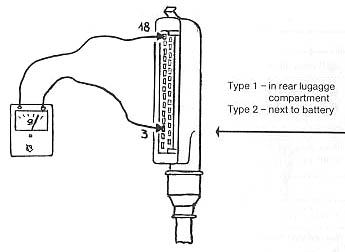

Full throttle contact in throttle valve switch not closing
- Pull multi-pin connector off control unit
- Connect ohmmeter between terminals 3 and 18
- Open throttle fully, ohmmeter reading must change from infinity ohm to
0 ohm

Reading changes to 0 ohm
Reading remains at infinity ohm